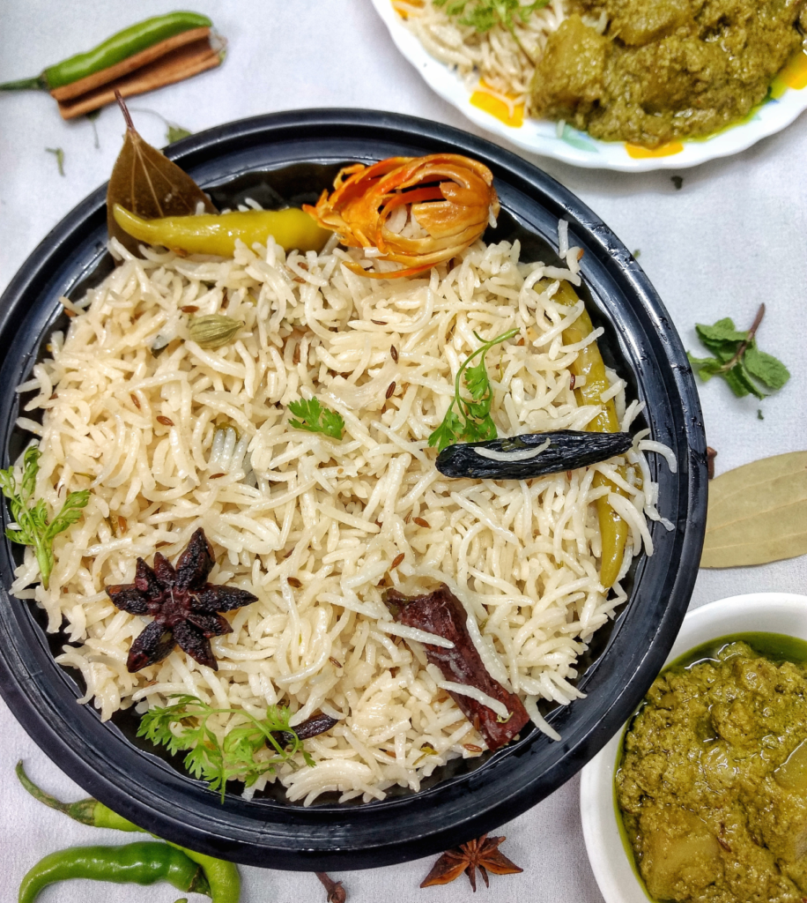

Bagara-rice-Recipe

bagara-rice
Authentic Bagara Rice | Easy and Simple recipe
Bagara Rice is a popular Hyderabadi rice dish made with long grain rice, aromatic spices, caramelized onions, and fresh herbs.
Bagara rice is a very famous rice dish in Hyderabadi cuisine. The name of this dish is derived from the word “bagaar” which translates “to temper”. Rice is added to the “bagaar” without any other ingredients or process, hence the name Bagara Rice or Bagara Rice.
Ingredients
- whole spices
- green chilies
- herbs
- onions
- aromatics
Steps :
- The easiest and fastest way is in a pressure cooker. It saves time as well as fuel.
- Heat oil+ghee in a kadai or heavy bottom vessel
- When hot, add thinly sliced onions. On medium flame, fry till they turn a light brown color
- Now add all whole spices and saute till aromatic.
- Next, add ginger garlic paste, and green chilies. Saute till the raw smell goes away
- Add coriander and mint leaves
- Saute till the leaves wilt. Add garam masala and salt and saute for few seconds.
-
Turn the flame to high. Now add water and let it come to a boil. Add lemon juice. Add the drained rice and give a gentle mix.
- Continue to cook on high flame till water reduces a bit. Turn the flame to low and cover the kadai. Cook for 12 minutes. Turn off the flame and rest for at least 10 minutes. Bagara rice is ready.
Serving Suggestions:
This rice is traditionally served with mutton dalcha. But, it can be
served with any dry dish or rich curry/gravy.